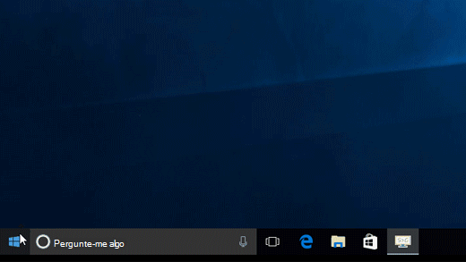
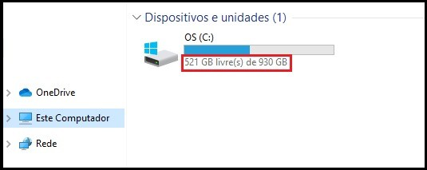
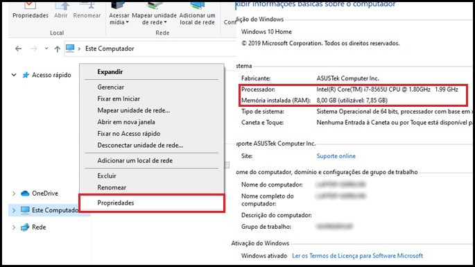
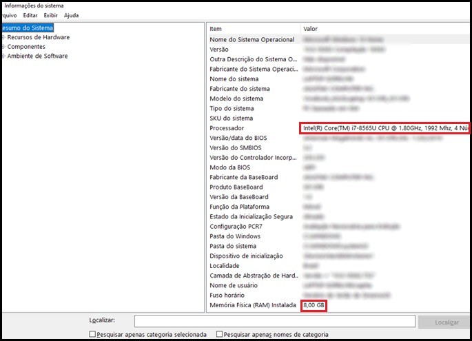

Configurações
Localizar as configurações no Windows 10
Localize as configurações do Windows em um piscar de olhos! Selecione o botão Iniciar e, em seguida, selecione configurações . Depois, navegue pelas categorias ou use a pesquisa para encontrar o que você está procurando.
Dicas: A maioria dos aplicativos tem suas próprias configurações. No aplicativo, selecione Configurações para fazer alterações específicas do aplicativo. Saiba como tornar o Windows mais fácil de ver e mais fácil de ouvir. Altere as configurações comuns (como o Modo Avião e Wi‑Fi) em tempo real na central de ações na barra de tarefas.
Como ver as configurações do seu PC nos Windows 7, 8 e 10!
Através do Windows Explorer
Pressione a tecla com o logotipo do Windows + E para abrir o Windows Explorer. Em seguida, clique uma vez no menu "Este Computador" ou "Meu computador". Logo na direita você encontrará a capacidade total do seu HD e o quanto você já está usando dele:
Após, clique com o botão direito em "Este Computador" (ou "Meu Computador") e selecione "Propriedades". Isso levará você diretamente ao menu Painel de Controle>Sistema e Segurança>Sistema, onde você pode ver o seu processador e memória RAM:
Através do Menu Iniciar
Na barra de pesquisa do Menu Iniciar, digite msinfo32 e aperte Enter. Isso o levará automaticamente ao menu de Informações do Sistema:
Esse método fornece informações muito mais detalhadas caso você esteja precisando. Obviamente, as os dados que foram borrados nas imagens acima estarão normalmente legíveis para você. Note que esse segundo método mostra tudo, menos a quantidade de espaço livre no seu HD. Para isso, utilize o primeiro método se necessário.
Avançar